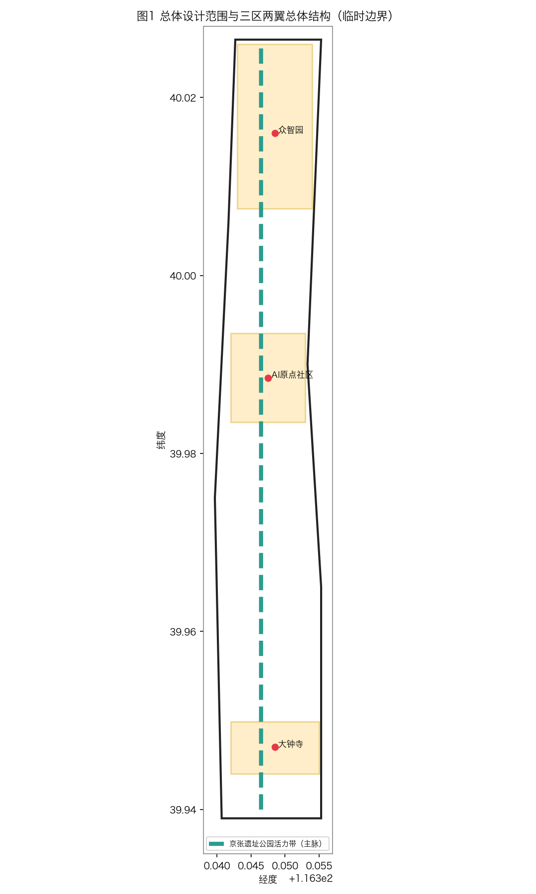
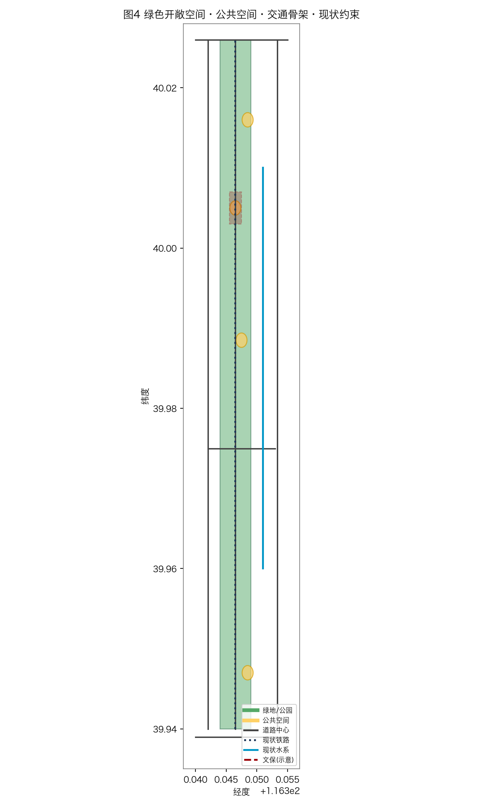

百年京张AI创新带概念方案报告
本报告为北京市海淀区百年京张AI创新带概念方案，由QClaw智能体辅助生成。
一、三层空间范围

二、重点区域设计

三、用地布局

四、交通与蓝绿空间

五、核心指标

六、来源与假设
数据来源：官方边界（provisional）、EPSG:4548坐标系、国家标准（GB 50137-2011等）。
假设：地块边界为示意性质，最终以审批规划为准。
本报告为北京市海淀区百年京张AI创新带概念方案，由QClaw智能体辅助生成。


数据来源：官方边界（provisional）、EPSG:4548坐标系、国家标准（GB 50137-2011等）。
假设：地块边界为示意性质，最终以审批规划为准。